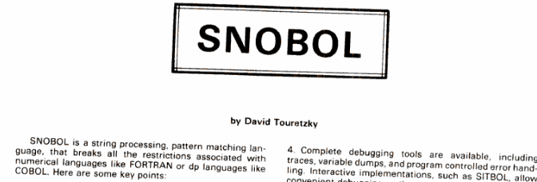

Snobol programming exercises

Sources
- [ forte1967 ] Allen Forte, SNOBOL3 Primer: An Introduction
to the Computer Programming Language, MIT Press, 1967
- [ griswold-poage-polonsky1971 ] R. E. Griswold, J. F. Poage,
and I. P. Polonsky, The Snobol4 Programming Language, Second
edition, Prentice-Hall, 1971
h